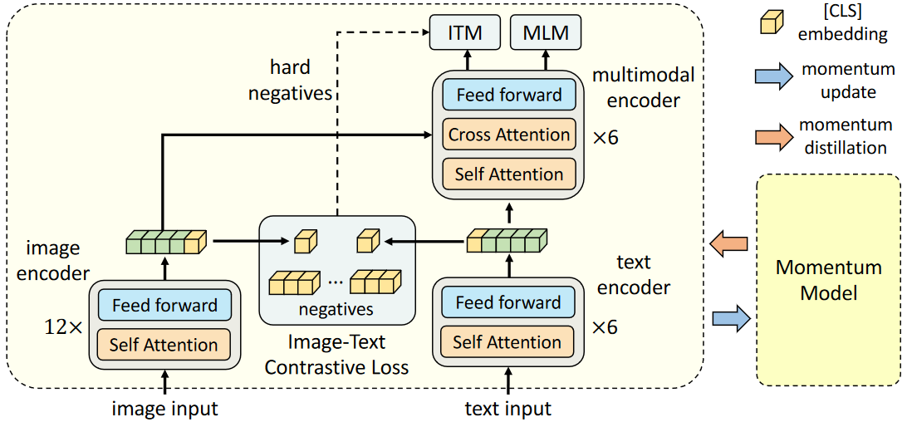
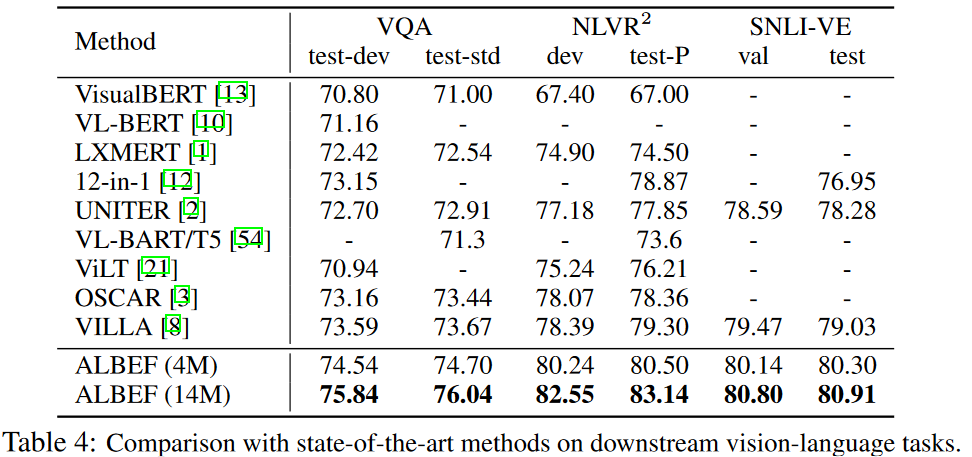

多模态系列(二)- ALBEF
代码地址：ALBEF
原文链接：Align before Fuse: Vision and Language Representation Learning with Momentum Distillation
多模态系列(二)- ALBEF
摘要
最近图像文本的大规模的特征学习非常火爆，大部分已有的方法都是用一个Transformer模型作为多模态的一个编码器，同时编码视觉的Token和文本的Token，视觉Token就是视觉特征，一般是region-based的图像特征,，即目标检测模型提取出来的特征。
本文贡献1–ALign BEfore Fuse：
ViLT和ALBEF都认为不需要目标检测的模型，但ViLT只是说用了目标检测模型以后速度太慢，希望推理时间变得更快，但是ALBEF分析认为使用预训练的目标检测器之后，视觉特征和文本特征无法align对齐，因为目标检测器是提前训练好的，只抽取特征，没有再进行end-to-end的训练，所以导致视觉特征和文本特征可能相隔很远，此时将两个特征同时送入多模态的编码器之后，编码器学习图像文本之间的交互信息就会变得很有挑战。作者提出对比学习的ITC Loss(与CLIP相同)，将图像和文本在Fusing之前实现Align，也就是他们论文的题目ALign BEfore Fuse。
本文贡献2–自训练方式学习：
网上爬取的数据特别noisy，因为图片文本对里面的文本通常具备搜索属性，但不是好的描述性句子，甚至没有描述，这种noisy web data的问题影响模型有效地学习文本图像特征，所以作者使用Momentum Distillation也就是自训练的方式去学习，自训练就是用Pseudo Label伪标签去学习。作者采用Moco提出的Momentum Encoder的形式生成Pseudo Target，从而达到一个自训练的效果。
在图文检索的任务上，ALBEF的效果最好，性能反超之前的方法，尤其是在特别大的数据上训练过的模型CLIP和Align。在VQA和VR任务上，ALBEF也比之前state of art提升2.37%、3.84%的准确度，而且推理时间也更快。模型在4 million的训练数据集下，能做到一个8卡A100训练三四天的时间，训练门槛大大降低。
跳过引言与相关工作方面，这部分可以见多模态论文串讲
3. ALBEF预训练
3.1 网络结构

图像端：给定任何一张图片，按照Vision Transformer的做法，把它打成patch，然后通过patch embedding layer送给一个Vision Transformer。这里是一个非常标准的12层的Vision Transformer的base模型，如果图片是224x224，那这里的sequence length就是196，然后加上额外的一个CLS token就是197，它的特征维度是768，所以这里绿黄色的特征就是197乘以768。但论文在预训练阶段用的图片是256x256，所以这里绿色的sequence length就会相应的再长一些。它的预训练参数用的DEiT，也就是Data Efficient Vision Transformer在ImageNet 1K数据集上训练出来的初始化参数。
文本端：文本端为保持计算量与clip类似，并且增强模态融合的部分，用前六层做文本编码，剩下的六层transformer encoder作为multi-model fusion的过程。文本模型用BERT模型做初始化，它中间的特征维度也是768，它也有一个CLS token代表了整个句子的文本信息。
momentum model：ALBEF为了做动量蒸馏(momentum distillation)，而且为了给ITC loss提供更多negative，增加了momentum model，这个模型参数由左边训练的模型参数通过moving average得到的（和MoCo一模一样），通过把moving average的参数设的非常高（论文里是0.995）来保证momentum model不会那么快更新，产生的特征更加稳定，不仅可以做更稳定的negative sample，而且还可以去做momentum distillation。
3.2 损失函数
ITC loss：对比学习就是首先定义一个正样本对，然后定义很多负样本对，对比使正样本对之间的距离越来越近，正负样本对之间的距离越来越远。在ALBEF里首先将图像I通过vision transformer之后得到图像的全局特征，图中黄色CLS token作为全局特征，也就是一个768×1的向量，文本这边先做tokenize，将文本text变成tokenization的序列，再输入BERT的前六层，得到了一系列的特征，文本端的CLS token作为文本的全局特征，也是一个768×1的向量。接下来与MoCo相同，图像的特征向量先做一下downsample和normalization，将768×1变成了256×1的向量，文本特征向量也是768变成256×1。正样本这两个特征距离尽可能的近，它的负样本全都存在一个q里，含有65536个负样本（因为它由momentum model产生的，没有gradient，所以它并不占很多内存），正负样本之间的对比学习，使得这两个特征距离尽可能的远。这个过程就是align before fuse的align，也就是说在图像特征和这个文本特征输入Multi-model Fusion的encoder之前，就已经通过对比学习的ITC loss让这个图像特征和文本特征尽可能的拉近，在同一个embedding space里，具体使用了cross entropy loss。
ITM loss：Image Text Matching，属于一个二分类任务，就是给定一个图片，给定一个文本，图像文本通过ALBEF的模型之后输出一个特征，在这个特征之后加一个分类头，也就是一个FC层，然后去判断I和T是不是一个对，这个loss虽然很合理，但是实际操作的时候发现这个loss太简单，因为判断正样本可能还有点难度，但是判断负样本很简单，所以这个分类任务，很快它的准确度就提升得很高无法进一步优化。因此ALBEF通过某种方式选择最难的负样本（最接近于正样本的那个负样本），具体来说ALBEF的batch size是512，所以ITM loss正样本对就是512个，对于mini batch里的每一张图像，把这张图片和同一个batch里所有的文本都算一遍cos similarity，然后它在这里选择除了它自己之外相似度最高的文本当做negative，这样ITM loss就非常有难度。
MLM：Mask Language Modeling，它把原来完整的句子text T变成一个T’，也就是有些单词被mask掉了。然后它把缺失的句子和图片一起通过ALBEF的模型，最后把之前的完整的句子给预测出来，它这里也借助了图像的信息去更好的恢复被mask掉的单词。
计算ITC loss和ITM loss的时候，输入都是原始的i和t，但是当计算MLM loss的时候，它的输入是原始的i和mask后的T’，所以模型每一个训练的iteration都做了两次模型的forward：一次模型的forward用了原始的i和t，另一次模型的forward用了原始的i和mask后的T’。为了计算不同的loss，这种多次前项在多模态学习中使用普遍，也因此多模态模型的训练时间普遍偏长。
上述公式是ALBEF的目标函数，也就是itc、mlm和itm的合体。
3.3 momentum distillation动量蒸馏
动机：
由于从网上爬下来的数据噪声严重，图像文本对经常是弱相关，甚至不匹配，这种noisy的data会导致计算目标函数时有偏差。比如在算ITC的时候，某个负样本文本很有可能也描述了图像里的很多内容，它可能不是爬下来的image text pair，但文本甚至可能比Ground Truth描述的还好。若此时将其作为一个负样本，就会对ITC的学习造成很大的影响。
改进方式：
作者认为one hot label（就是图片和文本就是一对，其他跟它都不是一对）对于ITC和MLM这两个loss来说不好，因为有的负样本也包含了很多的信息。所以作者采取了自训练方式，先构建一个momentum model然后用这个动量模型去生成pseudo targets伪目标（其实就是一个softmax score），这样它就不再是一个one hot label。
动量模型在已有模型之上做exponential moving average EMA，目的是在原始模型训练的时候，不仅希望模型预测与ground truth的one hot label去尽可能的接近，还希望模型预测与动量模型出来的pseudo targets尽可能的匹配，这样就能达到一个比较好的折中点。因为当one hot label正确时，可以学习到很多信息，但当one hot label是错误的，或者是noisy的时候，作者希望稳定的momentum model能够提供一些改进。
EMA:指数滑动平均
以ITC loss为例，它是基于one hot label的，所以这里再算一个pseudo target loss去弥补它的一些缺陷和不足。新的ITC loss跟前面ITC loss公式里的不同，在计算基于pseudo target的ITC loss时将ground truth换成动量模型输出的pseudo targets，在公式中为q，它不是one hot label，而是softmax后的概率，所以这里计算KL散度而不是cross entropy。
最终结果：
最终ALBEF的训练loss有五个：两个ITC、两个MLM、一个ITM，其中：
- ITC有两个loss：一个是原始的ITC，一个是基于pseudo target的ITC，分别加权（1-α）和α的loss weight，最终得到momentum版本的ITC loss。
- MLM loss有两个loss：一个是原始的MLM，一个是基于pseudo target的MLM，用新生成的pseudo target去代替了原来的ground truth，分别加权（1-α）和α的loss weight，最终得到momentum版本的MLM loss。
- ITM有一个loss：ITM没有动量版本，因为本身它就是基于ground truth，它就是一个二分类任务，而且在ITM里又做了hard negative，这跟momentum model有冲突
在图 2 中，我们展示了伪目标中前5个候选的示例，它们有效地捕获图像的相关单词/文本。
图 2：MLM（第一行）和 ITC（第二行）的伪目标示例。伪目标可以捕获真实文本未描述的视觉概念（例如“美丽的瀑布”、“年轻女子”）。
3.4 预训练数据集
本文与UNITER论文相同，用了四个数据集来预训练，分别是Conceptual Captions、SBU Captions、COCO和Visual Genome，具体如下表，其中，CC数据集原始版本是300万和1200万，但下载时候会有数据缺失的问题，所以数据集差几万个可能影响小，但差几十万个可能影响算法的效果，并且每个人下载下来的数据集可能都不完全一致。
独一无二的图像总数为 4.0M，图文对数量为 5.1M(例如COCO中一张图片可以对应多个文本，所以图文对数量会多一些)。为了证明我们的方法可以扩展到更大规模的网络数据，我们还包括了噪音更大的Conceptual12M 数据集，将图像总数增加到 14.1M 3。详细信息参见附录。
ALBEF的预训练数据集有两个设置：一个是4 million的setting有四个数据集，一个就是这个14 million的setting，加入CC12 million。这两个setting也是之前最常用的，不过现在预训练数据集规模已经越来越大，开源的LAION已经有了400 million，而且已经有了2 billion 5 billion这么大的数据集。
3.5 实施细节
模型由123.7M的 和一个 85.8M的 ViT-B/16组成，训练的batchsize是512，使用8个NVIDIA A100的GPU训练30个epochs，使用AdamW优化器， 0.02的weight decay。在前1000轮迭代中，学习率预热到，然后按照余弦函数衰减到，在预训练阶段，随机裁剪256×256图像作为输入，使用了RandAugment数据增强，在fine-tuning阶段，图像分辨率增加到384 × 384，并且按照VIT原文的方法对图像patches的位置编码进行插值，更新momentum model的momentum参数设置为0.995，图像文本对比学习的序列大小设置为65,536，在第一个epoch将蒸馏权重α从0升到0.4。
4. 互信息最大化视角
作者通过互信息最大化的角度，做了一些理论分析，结论就是文章里的这些训练的目标函数，包括MLM、ITM、还有momentum distillation，它们最终的作用都是为同一个图像文本对生成不同的视角，也就是在做一种data augmentation，从而让最后训练出来的模型具备Semantic Preserving的功能，就是只要是语义匹配的图像文本对，它就应该被当成是一对。
这样ALBEF不需要Bounding Box Annotation，也就不需要预训练的目标检测，自然输入图像也就不需要是目标检测需要的高分辨率的图像，这个CLIP和ViLT已经有了。
5. 下游Vision Language任务
任务说明：
ALBEF这篇论文做了五个任务：
- 图文检索（图像到文本、文本到图像、图像到图像、文本到文本）：
定义：给定一个数据库，去搜索Ground Truth的图像文本对。
衡量指标：因为是检索，衡量的指标就是这个Recall 召回率，一般用的是R1,R5,R10，就是说在你检索回来的一个、五个或者十个Sample里是否有Ground Truth Sample，有就算正确。
- 视觉蕴含(Visual Entailment)：
定义：给定一个假设或者一个前提，能否推理出这个前提，如果能推理出来，就是一个蕴含的关系Entailment。如果前后矛盾推不出来，就是矛盾Contradictory。如果没关系，不确定能否推出来，就是中立Neutral。
衡量指标：一般将Visual Entailment变成一个三分类的问题，衡量的指标就是分类准确度。
- 视觉问答（VQA）：
定义：给定一个问题一个图片，能否提供一个Answer回答这个问题，一般有两个Setting：一个是看作分类问题，它的这些答案都是固定的，从一个集合中选择一个正确答案，一般称作闭集VQA，例如VQA2.0数据集有一个提前设好的3192个Answer。一个是看作生成问题，需要一个Transformer Decoder做文本生成的任务，一般称作开集VQA，开集VQA它的任务难度大很多，因为有可能生成了正确的或者很相似的答案，但是它跟Ground Truth不一致，还是会被判错。这篇论文在做开集VQA的时候其实还是把生成的答案限制到了3192个答案里，严格意义上来说并不是那么开集，简化了问题，而且还是一个分类问题，衡量指标依旧是准确度。
衡量指标：分类准确度。
- 视觉推理（Visual Reasoning）：
定义：预测一个文本能不能描述一张图片，所以它是一个二分类任务问题
衡量指标：分类准确度。
- Visual Grounding
但其实Visual Grounding属于它自己的一个领域，很多多模态表征学习的论文里， 都不会去涉及这个的任务，一般是专门研究Grounding会做这个领域。
6. 实验
6.1 对所提出方法的评估
作者将用了MLM和ITM training loss的模型当做了baseline，因为基本上所有的之前的工作和现在的工作里面都会有这两个loss。
- 增加ITC也就是Align Before Fuse里的Align，这个提升是非常巨大的，基本是两个多点，三个点，而且是在检索、VE、VR、VQA这么多任务上都有明显的提升，所以CLIP、MoCo这种对比学习的方式非常厉害
- 增加ITM里提出的Hard Negative，大概都有0.5左右的提升
- 增加Momentum Distillation（MoD），在预训练阶段的MoD提升可能只有0.3 0.4个点，但是这个研究方向还是很好的，就是怎么从Noise Data里去学习有效的表征。
6.2 各任务测试结果
表2是fine-tuned的图文检索结果，表3 是zero-shot的图文检索结果。
Zero-shot的图文检索就是先预训练好一个模型，接下来就直接抽取特征，然后计算Cosine Similarity就可以直接检索，不需要在下游任务上fine-tune。但需要注意，本文在预训练完之后还在COCO那个数据集上又做了一遍有监督的fine-tune，但是CLIP和Align其实都是直接做Zero-shot。而且只是在Flickr30K上做了Zero-shot。
图文检索的数据集COCO、Flickr30K都已经刷的非常高了，所以这个领域需要新的更大的数据集了。
VQA、VR、VE三个任务都变成了一个分类问题，所以都用准确度来衡量。表4中跟之前最强的OSCAR比，ALBEF 4M其实就已经比它都要好了。

总之 ALBEF不论是在训练速度还是在推理速度上，还是在通用性或者在性能表现上，当时都是非常亮眼的工作。